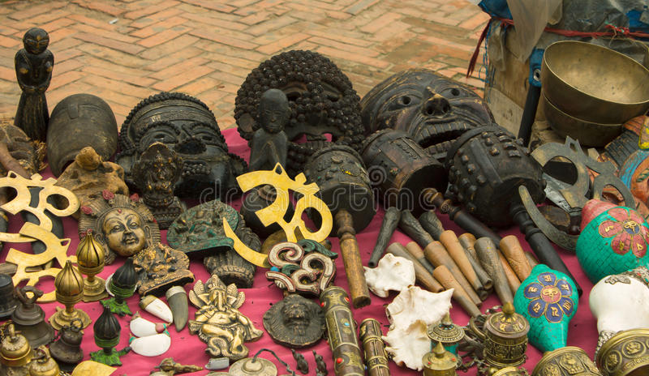
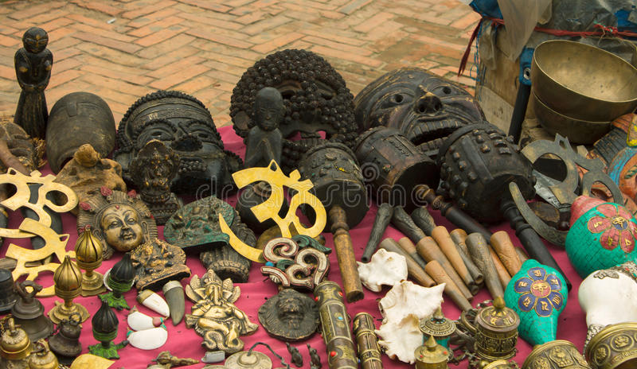
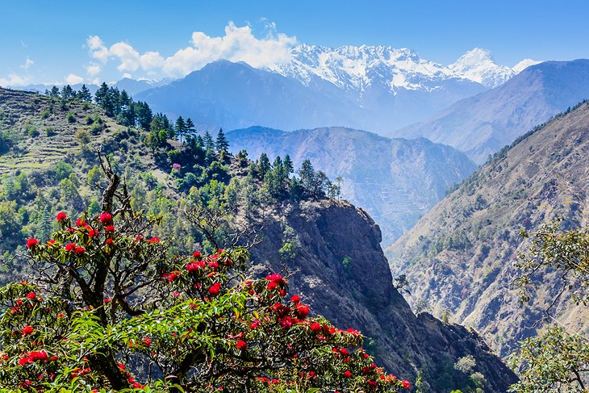
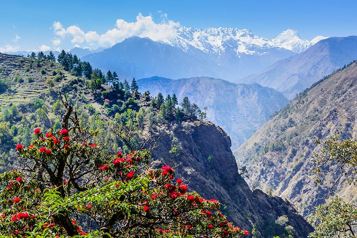

Nepalese handicrafts, which have been a part and parcel of the Nepalese heritage, depict the great tradition and proud culture of this great Himalayan Kingdom. Their origin dates back to the stone age when human beings were devoid of tools of any kind. Nepalese handicraft products have been best known to the World for its rich art, crafts and oriental architecture. The skill and techniques of making handicraft products, which have been handed down from generation to generation, not only represent the talent and skill of craftsmen but also reflect the social, religious and cultural values found in different parts of the country.


 

Most travelers spend some time in Kathmandu visiting sacred and historic attractions, and then head out to other parts of the country. Some of the best places to visit outside the capital are Chitwan National Park and Bardiya National Park for wildlife viewing, and the lakeside town of Pokhara, a popular area for embarking on treks.Trekkers will find a variety of options across Nepal, with the most important areas being the Everest, Annapurna, and Langtang regions.

 
